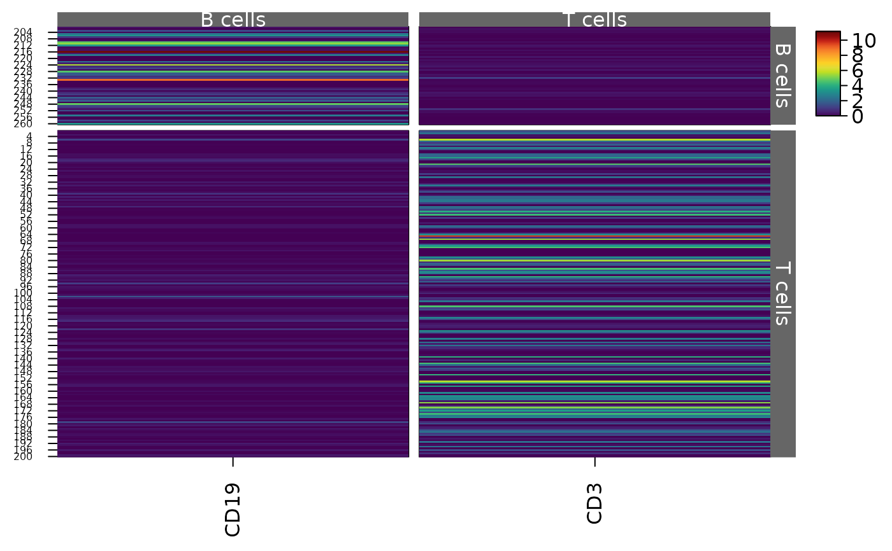
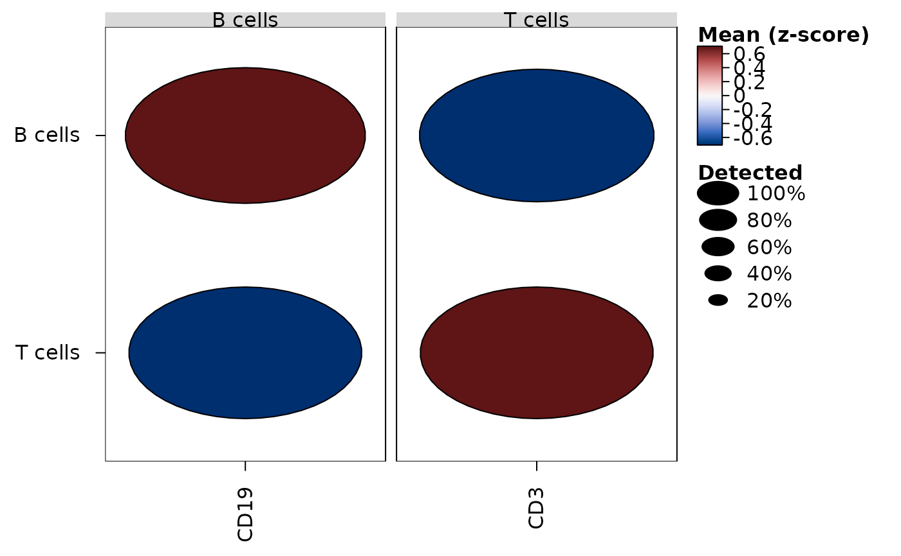

heat_map_markers() ranks the features of single-cell data by how well
they mark each group of cells (e.g. each cluster), for heatmaps and dot
plots of the top markers of each group. Each feature is scored in each
group by its AUC against all the other cells: the chance that a cell of
the group has a larger value than a cell outside it, ties counting half
(the Wilcoxon rank-sum statistic, Wilcoxon 1945 and Mann and Whitney
1947, over the product of the numbers of cells, as presto's
wilcoxauc() scores markers; Korsunsky et al. 2019). 0.5 is no better
than chance and 1 a perfect marker.
Usage
heat_map_markers(
x,
group_by,
features = NULL,
assay = NULL,
n = 5,
min_detected = 0.1,
min_logfc = 0.25,
threshold = 0
)Arguments
- x
single-cell data, a matrix or a data.frame (see
heat_map).- group_by
the group of each cell, the name of a column of its metadata or a vector (see
heat_map). Cells without a group are left out.- features
the features to score, set to
NULLby default for every feature (seeheat_map).- assay
the values of single-cell data to score (see
heat_map), e.g. log-normalised expression.- n
the number of top markers of each group, set to 5 by default.
- min_detected
the smallest proportion of a group's cells in which a marker of the group is detected, set to 0.1 by default.
- min_logfc
the smallest difference between the mean of a marker in its group and its mean in the other cells, set to 0.25 by default. On log-transformed values, such as log-normalised counts, the difference is the log fold change (in the base of the logarithm).
- threshold
values above
thresholdare counted as detected, set to 0 by default.
Value
a data.frame of class heat_map_markers with one row per
feature kept for a group, in the order of the groups and, within each
group, from the highest AUC: group (a factor), feature,
auc, logfc (the difference between the means in and out of
the group), p_value and p_adj (the p-value of the
rank-sum test and its adjusted value), mean_in, mean_out,
detected_in and
detected_out (the proportions of cells detected in and out of the
group) and top (TRUE for the top markers of each group). Its
"features" attribute lists the top markers of each group. Given to
features in heat_map or heat_map_dot,
the rows with top = TRUE are shown, grouped by the group they
mark; edit top to choose other markers. Given to x in
heat_map_dot, the markers are drawn as a dot plot coloured
by fold change and sized by adjusted p-value.
Details
Features are kept for a group when they are detected (above
threshold) in at least min_detected of its cells and their
mean in the group exceeds their mean in the other cells by at least
min_logfc. Each feature marks the group where its AUC is highest,
and the n features with the highest AUC in each group are its top
markers.
Each AUC has the p-value of the Wilcoxon rank-sum test of the group
against the other cells (two-sided, from the normal approximation with
corrections for ties and continuity, as wilcox.test(exact = FALSE)
finds it), and the p-values of each group are adjusted for the false
discovery rate by Benjamini and Hochberg's (1995) method over every feature
scored, not only those kept. With thousands of cells nearly every marker
has a tiny p-value, so the AUC and the difference of the means are the
better guides to how well a feature marks a group.
The AUC is found from one ranking of each feature's values. The zeros of
sparse data share one rank, so only the non-zero values are sorted; the
features are shared between threads (see heat_map_threads),
and only features that pass the filters in some group are ranked.
References
Benjamini, Y. and Hochberg, Y. (1995). Controlling the false discovery rate: a practical and powerful approach to multiple testing. Journal of the Royal Statistical Society: Series B, 57(1), 289-300. doi:10.1111/j.2517-6161.1995.tb02031.x
Korsunsky, I., Nathan, A., Millard, N. and Raychaudhuri, S. (2019). Presto scales Wilcoxon and auROC analyses to millions of observations. bioRxiv. doi:10.1101/653253
Mann, H. B. and Whitney, D. R. (1947). On a test of whether one of two random variables is stochastically larger than the other. The Annals of Mathematical Statistics, 18(1), 50-60. doi:10.1214/aoms/1177730491
Wilcoxon, F. (1945). Individual comparisons by ranking methods. Biometrics Bulletin, 1(6), 80-83. doi:10.2307/3001968
Examples
set.seed(1)
cells <- data.frame(
CD3 = c(rexp(200, 0.5), rexp(60, 4)) * rbinom(260, 1, 0.7),
CD19 = c(rexp(200, 4), rexp(60, 0.5)) * rbinom(260, 1, 0.7),
NKG7 = rexp(260, 1) * rbinom(260, 1, 0.3),
cluster = rep(c("T cells", "B cells"), c(200, 60))
)
markers <- heat_map_markers(cells, group_by = "cluster", n = 1)
markers
#> group feature auc logfc p_value p_adj mean_in
#> 1 B cells CD19 0.7119167 1.347321 4.529096e-07 1.358729e-06 1.522791
#> 2 T cells CD3 0.6985000 1.198595 2.234637e-06 6.703912e-06 1.351030
#> mean_out detected_in detected_out top
#> 1 0.1754692 0.7333333 0.69 TRUE
#> 2 0.1524351 0.6900000 0.70 TRUE
# The top markers of each cluster, grouped
heat_map(cells, features = markers, group_by = "cluster", popup = FALSE)

heat_map_dot(cells, features = markers, group_by = "cluster", popup = FALSE)
